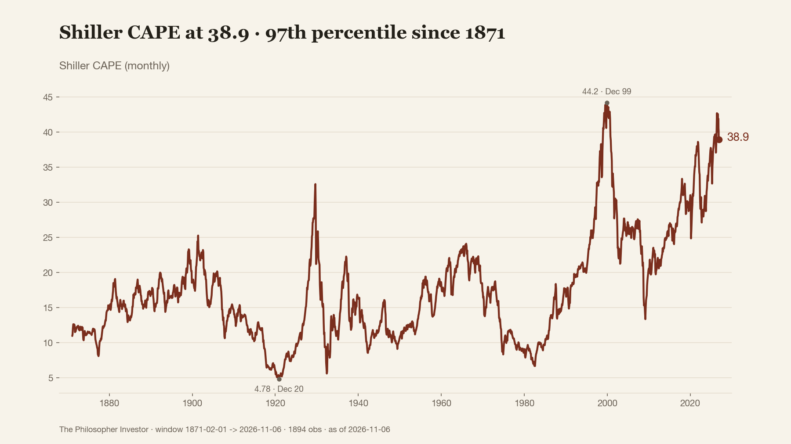
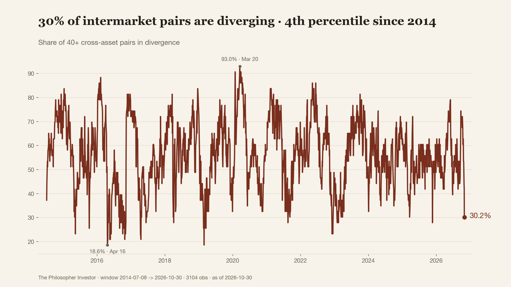
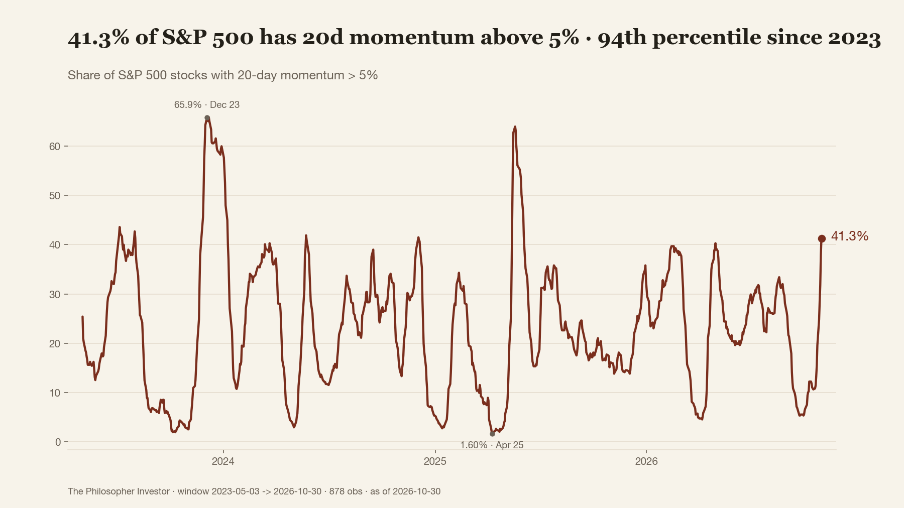
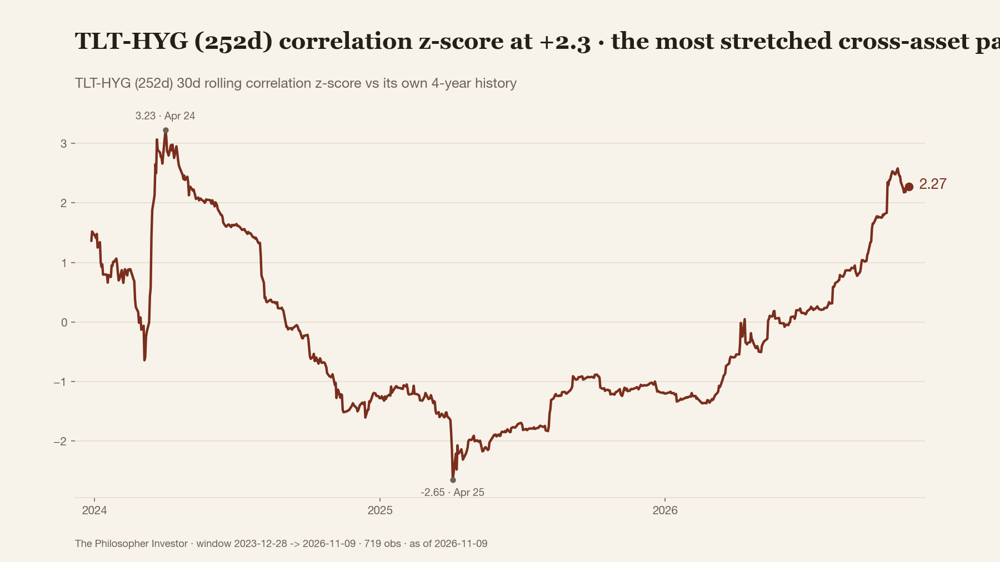
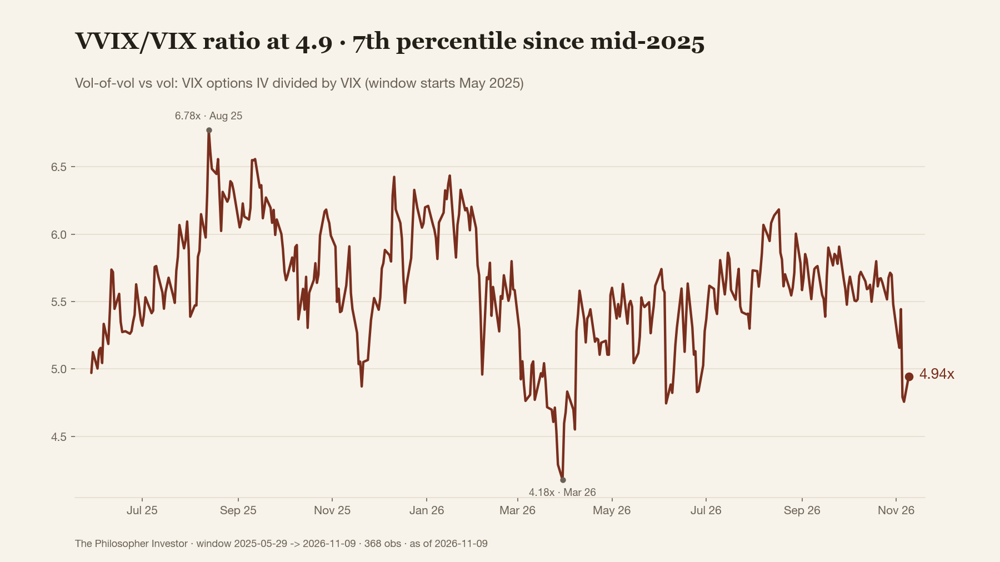
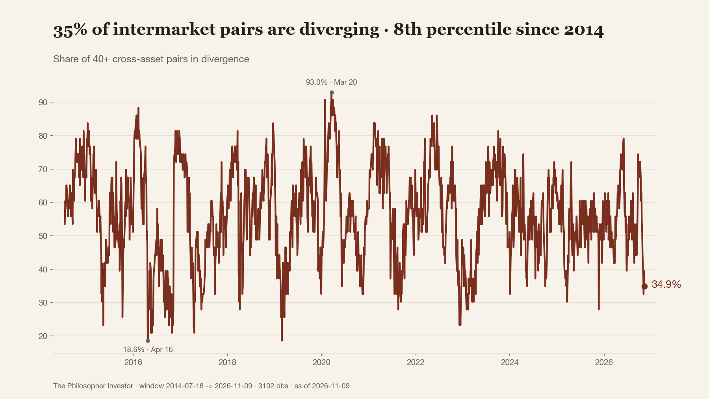
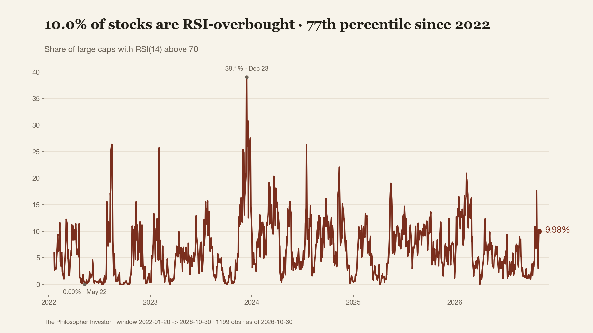
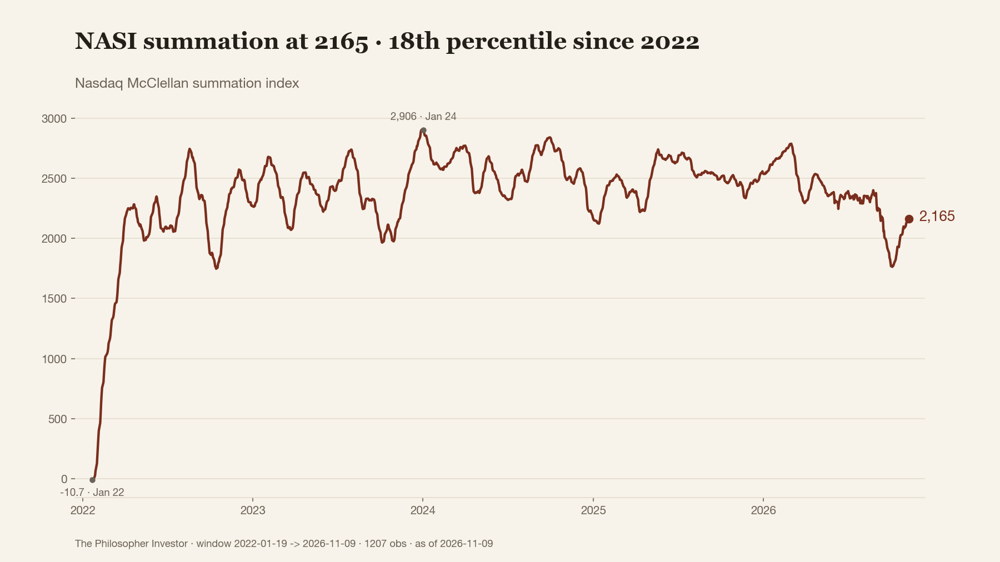

8 candidates · data through 2026-11-09
2 · 48,9 % du S&P 500 a un momentum 20j au-dessus de 5 %, 96e centile depuis 2023 : la hausse est large, pas portée par trois noms.
5 · VVIX/VIX à 4,9, 7e centile depuis mi-2025 : le marché des options sur la volatilité ne paie plus la peur.
6 · 35 % des paires intermarché divergent, 8e centile depuis 2014, loin des 95 % de mars 2020 : tout bouge ensemble.
1 · Shiller CAPE à 38,9, 97e centile depuis 1871, sous le pic de 44,2 de décembre 1999 : le prix payé aujourd'hui pour un dollar de profit.
7 · AAII bull-bear à -14,3, 13e centile depuis 1987, alors que le SPY est à -3,4 % de son sommet du 6 octobre : les particuliers interrogés restent pessimistes.
Dropped: 3 4 8







